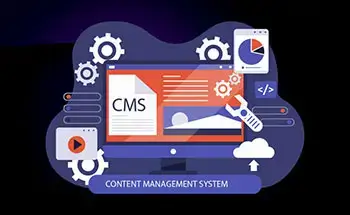
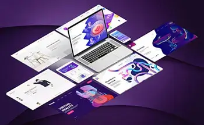

Web Application Development
We create custom web apps aligned with your business goals and assist you in achieving maximum growth. We aim to create web apps that maximize resource usage at a low price.
Our web developers offer web design and expert web development services to clients. CloudConverge offers many web design and development services. These include creating responsive websites, mobile web development solutions, custom e-commerce experiences, and intranet experiences with the most current web technologies.
Consumers visit company or service provider websites before purchasing. This means that up to 85% of them make purchases online. In an increasingly competitive market, the look, usability, and accessibility of your site are crucial. Your brand’s ability to deliver digital solutions is key to your business’s success.
CloudConverge has been the preferred custom web development company for mid-sized businesses and large global brands for more than a decade. Our web developers are certified to provide various web development services, including progressive web apps (PWAs) and personalized customer experience platforms. You can establish a strong digital presence with custom website design and development services. An attractive, functional, and responsive website will help you grow your business. We are a leading web development company and offer a wide range of website design and development services for our clients, including start-ups and mid-sized businesses. Our focus is on delivering high-quality, feature-rich software and web applications that are professional and highly efficient.
Make the first step in the right direction and choose a web application development company to help you with your new project. CloudConverge is your best choice for web design and development services.
We create custom web apps aligned with your business goals and assist you in achieving maximum growth. We aim to create web apps that maximize resource usage at a low price.
CloudConverge, a top eCommerce website development agency/company, provides clients with custom eCommerce solutions. We provide technical consultations and develop plans to meet their specific requirements.
CMS developers have years of experience in customizing CMS solutions for different industries. Our talented developers can deliver the exact solution you require, whether you need a CMS platform such as Joomla or WordPress.

CloudConverge is a web design and development company. CloudConverge’s web experiences are highly-functional, feature-packed, and digitally transformative. They are user-friendly, fully functional, and very secure, and they can scale your business.

To help you reach more clients, our web designers use tried-and-true methods to create user-friendly websites. A team of UI designers can help you build a robust online presence and get you on the path to success.
We can help you with your branding and marketing challenges by combining traditional and digital strategies. As integrated marketing partners, we aim to help you build brand awareness and brand experiences through owned, earned, and paid channels.
Your business must develop new services and products quickly. With infrastructure as code, IT environments are readily available at any time they’re needed.
With APIs integrated and self-service platforms, the infrastructure-as-code platform makes developing in your cloud environment effortless.
Infrastructure as code grants your DevOps teams access to the correct data and rights to self-provision cloud infrastructure sustainably.
From conception to design, construct, test and finally release, infrastructure as code can provide development, pre-production, and production environments to reduce the impact on live services.
No additional server is required to distribute configuration in infrastructure-as-code tools. Hence reducing infrastructure costs and improving security.
Our engineers study customer needs and assess the existing infrastructure. Our experts create plans to establish DevOps procedures and implement the IaC method.
In the process of setting up an infrastructure code-based, DevOps technicians proceed to implement it. The team then creates custom templates and incorporates pipelines for CI/CD, etc., within 6-12 weeks.
CloudConverge uses the following tools for creating code infrastructure: AWS CloudFormation, Terraform, Ansible, Azure Resource Manager, Chef, Puppet Vagrant, etc.
Training in a hands-on manner to help educate the team and the customer on the fundamentals of IaC and DevOps best practices, allowing internal developers to upgrade and keep deployments quickly.
Our teams have the resources necessary to expand upon demand, helping improve, upgrade, or maintain deployment.


We have clients from all over the world, including US, UK, Australia, Middle East, Canada and India
We have developed numerous complete web & mobile app for our clients across the globe.
We as an organization believe that client satisfaction begins from requirements definition phase to design, feedback cycle and golive.
We operate on all the top technology stacks such as .NET Core, MERN, MEAN, React Native, Swift, Java and many more.


“Good experience overall. My 3rd project with them overall. Will highly recommend using them.”

Tom WymanWeb Designer
“Its been a pleasure to work with CloudConverge.io team. They have a great team, including their Customer Success Manager who was great help to us. We have been doing great during our peak sale season, without any hickup. Great job guys.”

Richard HellerCEO
“We are really happy with how quickly we were able to launch the project, they had a really seamless process of getting our existing database and agents onboard, manage their leads & properties. We will definitely recommend using them for any web solution project. They have a great team in place with a talent to understand business intricacies.”

Samuel CorrensLong Island RE
“We were looking to modern a lot of aspects within our organization including migration to Business Central as ERP, implementing Microsoft 365, Cloud Services and Web Development. We at Kabu Projects and Atmos are happy to refer Cloud Converge team and all IT services. They are well-versed with the best practices, have a good project management and software team.”
Kabu Projects
“We are a non-profit were organizing a large event which includes delegates and attendees from all over the globe. The way Cloud Converge team handled our web presence, online payment system was truly exceptional. The entire process including site design, implementation of CRM, integration with partners, live dashboards were all delivered in record time. Most of all, because of the high footfall on the event, we had thousands of registration on launch itself, the way the entire system worked effortlessly was a great experience for all stakeholders.”

Entrepreneur’s Organization Gurgaon
“We are very happy with the project delivered by the CC team. The entire development process has worked seamlessly for us, with regular updates, thorough testing of deliverables, great ideas throughout the development process.”

Barry SarnoffCEO